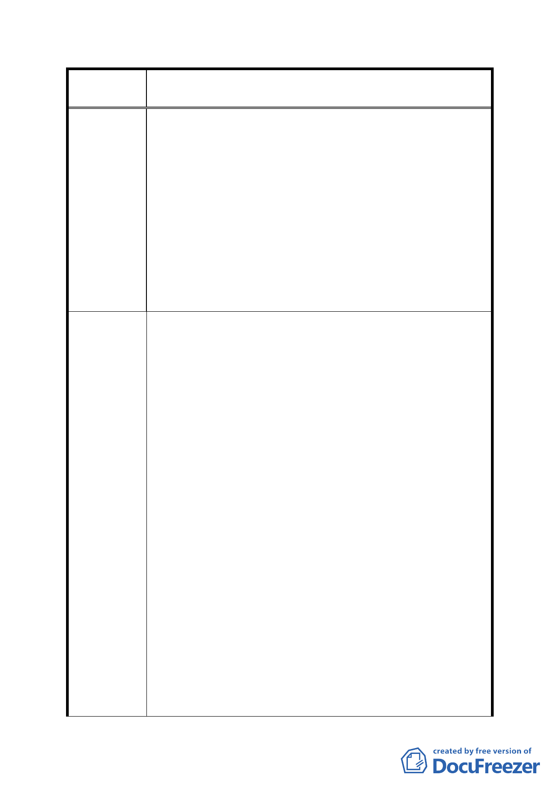

案
名
修訂臺北市「基隆河（中山橋至成美橋段）附近地區土地使
用分區與都市設計管制要點」（北段地區）計畫案
上；但依市場現況，三層樓以上作商業使用將難以經營。
故應依市場需求，修訂本地區之商業使用比例。
三、建築物高度規定：
依建議修正條文仍屬二度空間之規範，無法呈現都市三度
空間之天際線特色，以及維持本地區之山系視覺廊道。且
按前述規定，建築設計需做大幅修改並重新設計，將影響
本案參與「臺北好好看」之時程。
四、容積宜入總量之限制及增訂容積增加上限規定：
「臺北好好看」為市府重大政策，並訂有容積獎勵機制。本
案提經「臺北好好看」審查委員會審查同意適用容積獎勵機
制，且依都市設計審議確認其公共性與都市創意精神，不應
限定容積上限。
一、都市計畫審議過程：
建議整合位於大彎北段參與「臺北好好看」之 11 個案，
以專案合併方式辦理「臺北好好看」開發計畫案細部計畫
通盤檢討。考量後續實務作業時程，務必力求審議之效率。
二、商娛區土地及建築物使用規定：
考慮本地區商業使用量，建議建築物低層部(1 至 3 樓)維
持做商業使用，但考量實際設計法規規定，需扣除地面層
挑空型開放空間、梯廳與機電設施空間等，建議修正為：
建築物低層部作附表一指定使用項目應達申請基地最小
法定建蔽率之建築面積乘以 3 倍之 70％（商業使用容積為
建議辦法
40％×3x70％=84％），其餘樓層得比照臺北市土地使用分
區管會制規則第三種商業區之規定辦理。
三、建築物高度規定：
建議整合位於大彎北段參與「臺北好好看」之 11 個案，
各案建築物於基地內退縮並錯落配置，規範建築物之三度
空間量體與視覺軸線，以維持本地區山系視覺廊道。
建議修正為：街廓編號 A1、A2、B1、B2 建築基地面向基
隆河及山景側之建築物立面，高於地面 15 公尺以上 40 公
尺以下之建築物，需自土地細分規模之境界線退縮 15 公
尺以上；高於地面 40 公尺以上之建築物，需自土地細分
規模之境界線退縮 25 公尺以上。並規範建築頂層之立面
設計與夜間照明，以維優美天際線之景觀。
- 82 -